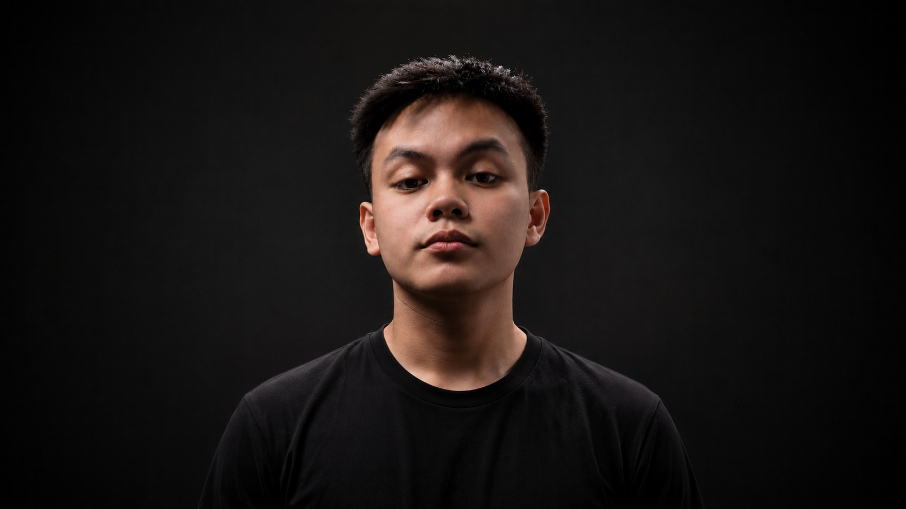
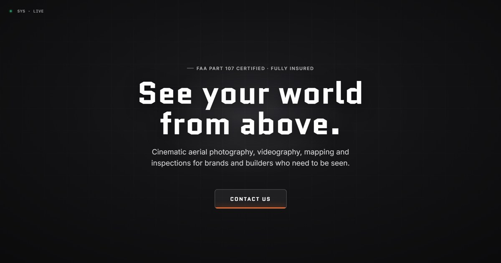
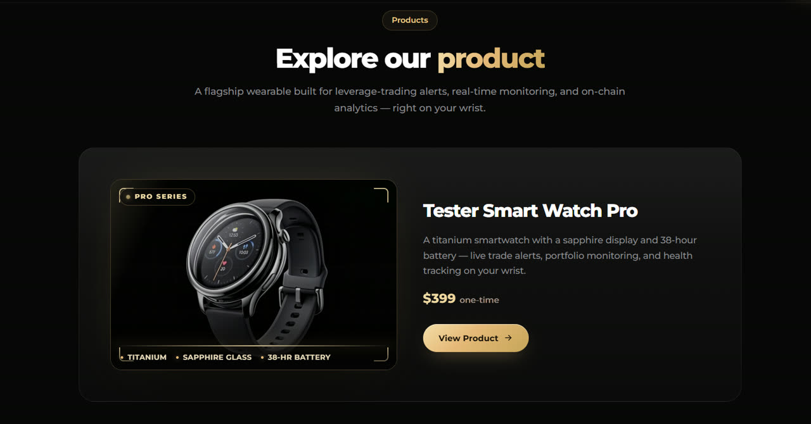
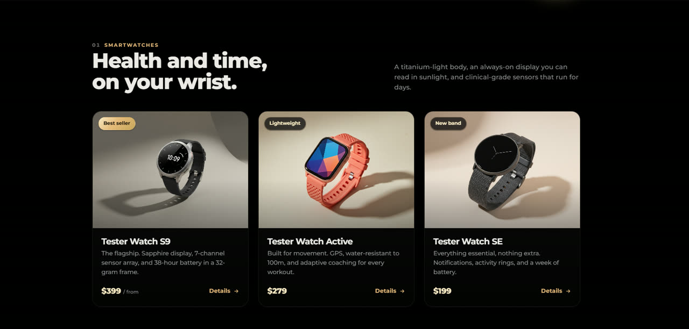
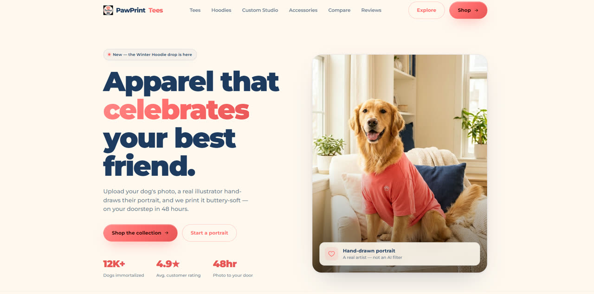

AI-powered consumer drone — a product site plus a matching pitch deck on one shared design system.
View details ↗
Flagship product page led by a video hero, with spec callouts and pricing.
View details ↗
A smart-gadgets brand page with AI-generated product imagery.
View details ↗
Upload a pet photo, get a hand-drawn portrait tee — delivered in 48 hours.
View details ↗I build modern websites and automate the busywork behind them, with Claude Code at the center.
I take sites end to end — React front ends, Spring Boot and REST APIs, Supabase and Firebase for data — then wire in automation with n8n, LLMs and RAG, plus AI-generated media.